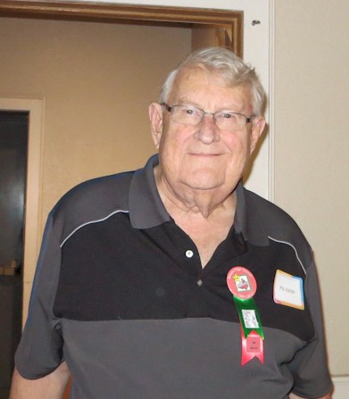
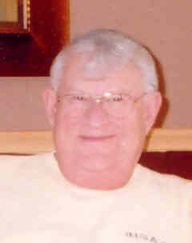
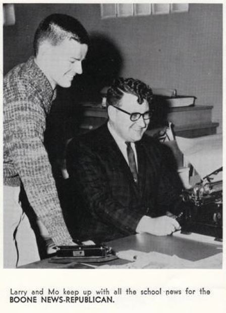

BHS 1967 Honorary Broadcaster / Newsman / Coach Member
Mo Kelley
Click to Email
Click to Email
 Mo Kelley - Click to Read Kelley's Korner |
 Mo Kelley 2017 - Click to Read Kelley's Korner |
|
 Mo Kelley - Click to Read Kelley's Korner |
 1963- Mo Kelley |